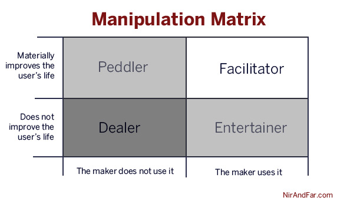

Let’s admit it, we in the consumer web industry are in the manipulation business. We build products meant to persuade people to do what we want them to do. We call these people “users” and even if we don’t say it aloud, we secretly wish every one of them would become fiendishly addicted.
Users take our technologies with them to bed. When they wake up, they check for notifications, tweets, and updates before saying “good morning” to their loved ones. Ian Bogost, the famed game creator and professor, calls the wave of habit-forming technologies the “cigarette of this century” and warns of equally addictive and potentially destructive side-effects.
When Is Manipulation Wrong?
Manipulation is a designed experience crafted to change behavior — we all know what it feels like. We’re uncomfortable when we sense someone is trying to make us do something we wouldn’t do otherwise, like when at a car dealership or a timeshare presentation.
Yet, manipulation can’t be all bad. If it were, what explains the numerous multi-billion dollar industries that rely heavily on users willfully submitting to manipulation? If manipulation is a designed experience crafted to change behavior, then Weight Watchers, one of the most successful mass-manipulation products in history, fits the definition.
Much like in the consumer web industry, Weight Watchers customers’ decisions are programed by the designer of the system. Yet few question the morality of Weight Watchers. But what’s the difference? Why is manipulating users through flashy advertising or addictive video games thought to be distasteful while a strict system of food rationing is considered laudable?
A More Addictive World
Unfortunately, our moral compass has not caught-up with what technology now makes possible. Ubiquitous access to the web, transferring greater amounts of personal data at faster speeds than ever before, has created a more addictive world. Addictiveness is accelerating and according to Paul Graham of Y Combinator, we haven’t had time to develop societal “antibodies to addictive new things.” Graham puts responsibility on the user: “Unless we want to be canaries in the coal mine of each new addiction—the people whose sad example becomes a lesson to future generations—we’ll have to figure out for ourselves what to avoid and how.”
But what of the people who make these manipulative experiences? The corporations who unleash these addictive technologies are, after all, made up of human beings with a moral sense of right and wrong. We too have families and kids who are susceptible to addiction and manipulation. What shared responsibilities do we code slingers and behavior designers have to our users, to future generations, and to ourselves?
The Manipulation Matrix
I offer a simple decision support tool for entrepreneurs, employees, and investors to be used long before product is shipped or code is written; even before customer development has begun. The Manipulation Matrix does not try and answer which businesses are moral or which will succeed. Nor does it describe what can and cannot become a habit-forming technology. The matrix seeks to help you answer not, “Can I hook users?” but “Should I attempt to?”
To use the Manipulation Matrix, the maker needs to ask two questions. First, “Will I use the product myself?” and second, “Will the product help users materially improve their lives?”

the dislocation of form and function has set a new challenge for designers: how to help us to operate ever more complex digital products. In ye olden days when form did follow function, you could guess roughly how to use an object from its appearance. But our ability to work out how to download and play music on a Shuffle is largely determined by the design quality of the software that operates it

"The font you use, the size of print, boxes, shading — all those things help [draw
attention to an item]," says Lansing. "But you don't want to go overboard with all of that;
it still needs to look elegant and concept appropriate. You don't want to have a starburst
in the margin that says 'Buy this.' . . . But that's what you want to say subliminally."
Designers also trade in storytelling. The elements we must master are not the content narratives but the devices of the telling: typography, line, form, color, contrast, scale, weight. We speak through our assignment, literally between the lines.
Amy Jo Kim, Jess Bachman, Max Ogles
Photo Credit:
byJess.net and Sarah G
Photo Credit:
byJess.net and Sarah G